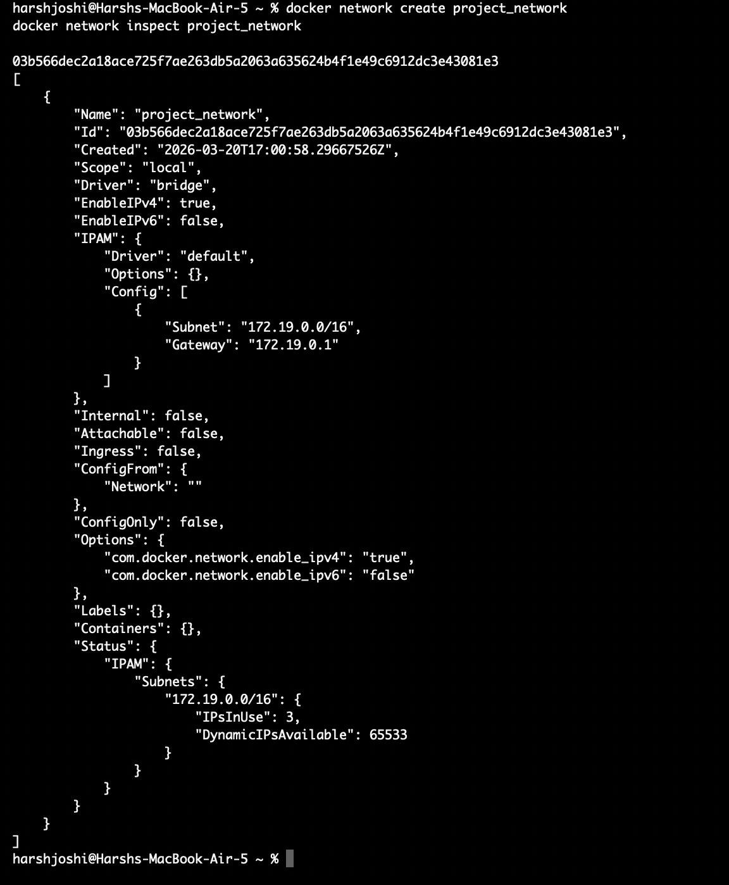
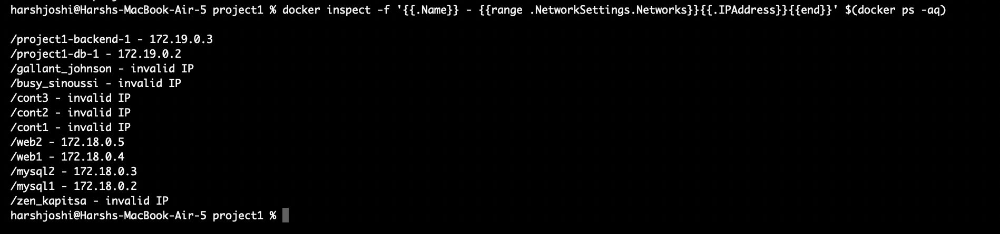
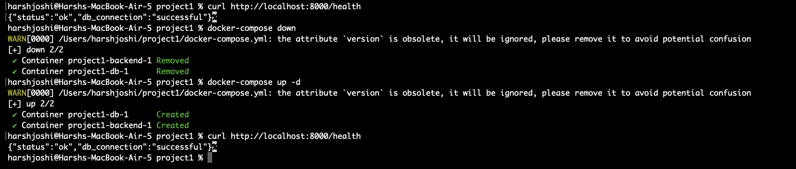

A production-grade architecture featuring multi-stage Docker builds, IPvlan networking, persistent volumes, and Docker Compose orchestration — built with FastAPI + PostgreSQL 15.
In an enterprise-grade environment, preventing bloated container images is crucial for deployment speed and drastically shrinking the security attack surface. In this project, we implemented a Multi-Stage Dockerfile for the compiled Python environment to minimize the image footprint.
python:3.11-slim, installs heavy C-compilation dependencies (gcc, python3-dev), and builds python package wheels independently. We effectively exclude these massive build paths from the final runtime.python:3.11-slim image. It simply copies the pre-built .whl artifacts from the Builder stage and runs the FastAPI codebase safely.Baseline monolithic builds reach nearly 1GB when compiling libraries like asyncpg. Our dual-stage pattern yields a highly-optimized image hovering under 130 MB total, marking an incredible 85% footprint reduction.
Advanced container orchestration relies heavily on isolated network topologies. First, we created and explicitly verified our custom IPvlan project_network using standard Docker tools:
docker network create project_network
docker network inspect project_network
Next, we orchestrated the PostgreSQL database and FastAPI backend using Docker Compose in detached mode. To prove network isolation execution, we dynamically fetched their assigned IP addresses inside the secure mapping:
docker-compose up -d --build
docker inspect -f '{{.Name}} - {{range .NetworkSettings.Networks}}{{.IPAddress}}{{end}}' $(docker ps -aq)
Finally, we explicitly tested the API layer, aggressively tore the containers down (docker-compose down), booted them back up (docker-compose up -d), and validated the health endpoint to prove the mapped Docker Volume successfully persisted our database state across container death cycles!
curl http://localhost:8000/health
docker-compose down
docker-compose up -d
curl http://localhost:8000/health
Designing advanced orchestration required understanding MAC address propagation boundaries: